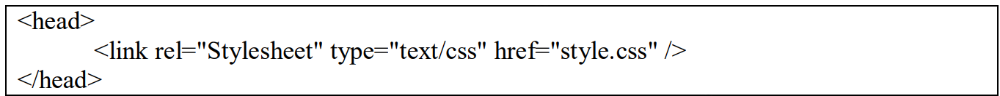
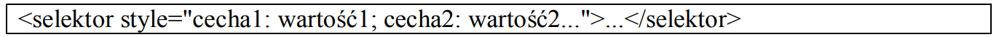
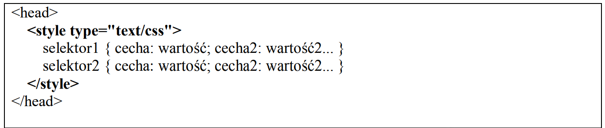
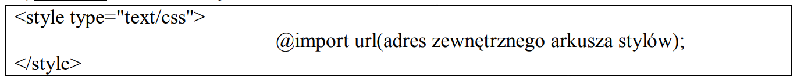

13 Tech. Gdańsk
przyjazna szkoła
Gdańsk, 19.10.2023 r.
Pozdrowienia
Kod Zadania 4
html:
<html> <head> <meta charset="UTF-8" /> <link rel="stylesheet" type="text/css" href="style.css"> </head> <body> <h1> Sposoby podłączania styli do strony (skrócone zestawienie). </h1> <br/> <br/> <ol> <li>Zewnętrzny arkusz stylów. <br/>  </li> <br/> <br/> <li>Styl lokalny inaczej: (styl wpisany, liniowy, linijkowy, w linii) czyli dopisanie arkusza do wybranego bloku treści strony. <br/>  </li> <br/> <br/> <li>Wewnętrzny arkusz stylów. <br/>  </li> <br/> <br/> <li>Alternatywny arkusz stylów. <br/> <img src="img/alternatywny_arkusz_stylów.png" width="95%"/> </li> <br/> <br/> <li>Import arkusza stylów. <br/>  </li> <br/> <br/> <h3> Kaskadowość stylów <br/> <p> Kaskadowość stylów określa pierwszeństwo w oddziaływaniu na te same elementy strony stylów z różnych źródeł (lokalny, zewnętrzny, wewnętrzny itp.). Style tworzą hierarchię tworząc kaskadę dlatego taka nazwa. Kaskadowość stylów pozwala zatem pracować z kilkoma źródłami stylów, bez obawy o wystąpienie konfliktów. </p> </h3> <br/> <h4> Priorytet ważności stylów (pierwszeństwo) wyglądałby tak: </h4> <br/> <p> Najważniejszy <br/> <br/> 1. Styl lokalny, <br/> 2. Rozciąganie stylu (SPAN), <br/> 3. Wydzielone bloki (DIV), <br/> 4. Wewnętrzny arkusz stylów, <br/> 5. Zewnętrzny arkusz stylów, <br/> 6. Import arkusza stylów, <br/> 7. Domyślne ustawienia przeglarki <br/> <br/> Najmniejważny </p> <br/> <br/> <h2> !!!UWAGA!!! </h2> <br/> <a> Polecenie dołączenia zewnętrznego arkusza powinno znajdować się w dokumencie wcześniej niż wewnętrzny arkusz. Odwrotna kolejność złamie zasady kaskadowości! </a> <br/> <br/> <br/> </ol> </body> </html>
Style:
body { background-color: black; } h1, h2, h3, h4 { font-family: Times New Roman; text-align: center; color: white; } p { font-family: Arial; color: white; font-size: 18px; text-align: left; } a { color: white; font-size: 18px; text-align: center; } tr, td { color: white; font-size: 18px; text-align: center; } ol, li { color: white; font-size: 18px; text-align: left; } p#styl1 { color: #FADA16; font-size: 33px; } p#styl2 { color: #FF00C6; font-size: 22px; }